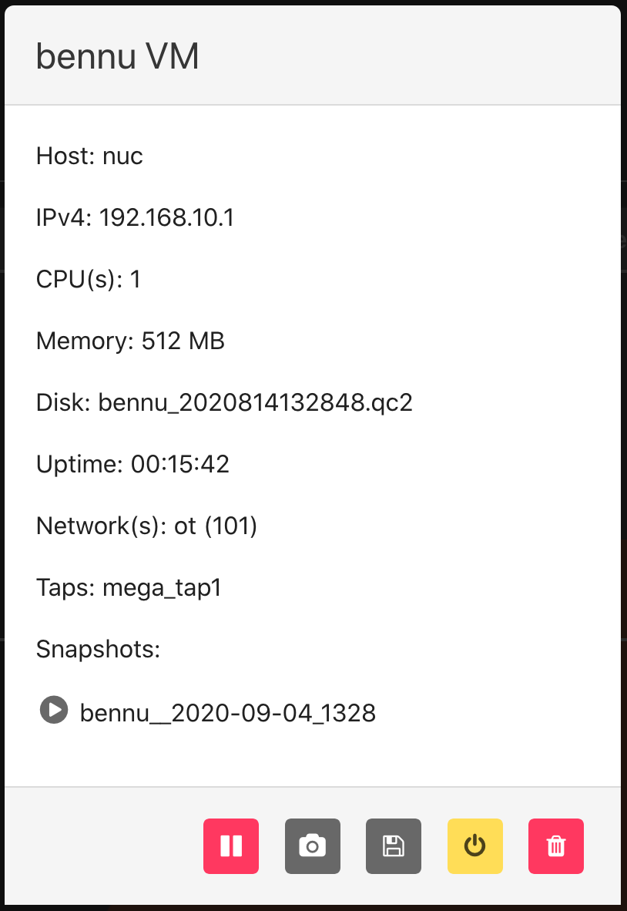

VMs¶
VM Info¶
From the Web-UI¶
The experiment must be started; click on the experiment name to enter the Running Experiment component. Within that component, click on the VM name and you will be presented with a VM information modal.

Available commands
restorea snapshot by clicking the play button next to the desired snapshot name.
Buttons from left to right on the footer of modal:
* pause a running VM with the pause button
* Create a snapshot of a running VM with the camera button
* Create a backing image of a running VM with the floppy disk button
* redeploy a running VM with the yellow power button
* kill a running VM with the trash can
From the Command Line Binary¶
There are two options for displaying the information for VMs in an experiment. First run the following command to see information for all VMs in a given experiment.
$> phenix vm info <experiment name>
Or, run the following to see the information for a specific VM in an experiment.
$> phenix vm info <experiment name> <vm name>
Packet Capture¶
From the Web-UI¶
Click on the name of the network tap on a running VM in a started experiment to start a packet capture. The name of the network tap will turn green once a packet capture has started. It is possible to start captures on multiple network taps. However, when you stop packet capture, it will stop captures on all network taps.
From the Command Line Binary¶
To start a packet capture, run the following command.
$> phenix vm capture start <experiment name> <vm name> <iface index> </path/to/out file>
To stop all packet captures on a running VM, use the following command.
$> phenix vm capture stop <experiment name> <vm name>
Kill a VM¶
From the Web-UI¶
Click on a running VM in a started experiment to access the VM information modal. The red trash can icon to the far right of the modal footer will kill that VM. Note: if you stop and then start the experiment again, that VM will run again per the experiment configuration.
From the Command Line Binary¶
To kill a VM, run the following command.
$> phenix vm kill <experiment name> <vm name>
Modify the Network Connectivity¶
From the Web-UI¶
Click on the network for the desired VM in the Running Component to modify the settings. Select from a pull down what network you want to switch the VM interface you clicked on to. To revert back to previous setting, simply repeat selecting the network interface you wish to change, and select the previous network setting.
From the Command Line Binary¶
To connect a VM network interface to a different network, run the following command.
$> phenix vm net connect <experiment name> <vm name> <iface index> <vlan id>
To disconnect a VM network interface, run the following command.
$> phenix vm net disconnect <experiment name> <vm name> <iface index>
Pause a VM¶
From the Web-UI¶
Click on the name of a running VM in a started experiment to access the VM information modal. To pause a VM, click on the pause button (pause button, furthest button to the left). To start a paused VM, that same button will become a green play button; simply click it to start.
From the Command Line Binary¶
To pause a VM, run the following command.
$> phenix vm pause <experiment name> <vm name>
To resume a paused VM, run the following command.
$> phenix vm resume <experiment name> <vm name>
Redeploy a VM¶
From the Web-UI¶
Click on the name of a running VM in a started experiment to access the VM information modal. To redeploy a VM, click on the redeploy button (yellow power button, second from the right). You will be able to modify the settings for CPU, Memory, Disk, and whether to replicate original injections before you redeploy the VM.
From the Command Line Binary¶
To redploy a VM, run the following command.
$> phenix vm redeploy <experiment name> <vm name>
Resume a VM¶
From the Web-UI¶
Click on the name of the paused VM in a started experiment to access the VM information modal. Click the green play button (previously the pause button, furthest button to the left).
From the Command Line Binary¶
To resume a paused VM, run the following command.
$> phenix vm resume <experiment name> <vm name>
Modify VM Settings¶
From the Web-UI¶
There are two ways to modify VM settings: 1. Click on a stopped experiment to access the Stopped Component. You are able to edit the following: * Host name * CPUs * Memory * Disk * Do not boot flag 2. From a running experiment, click on the VM name and then the redeploy button (yellow power button, second from the right on the modal footer). You are able to edit the following: * CPU * Memory * Disk * Replication of original injections
From the Command Line Binary¶
This command is not yet implemented. For now, you can edit the stopped experiment directly with the following command.
$> phenix cfg edit topology/<topology name>
This will launch the system editor where you can directly modify the experiment settings.